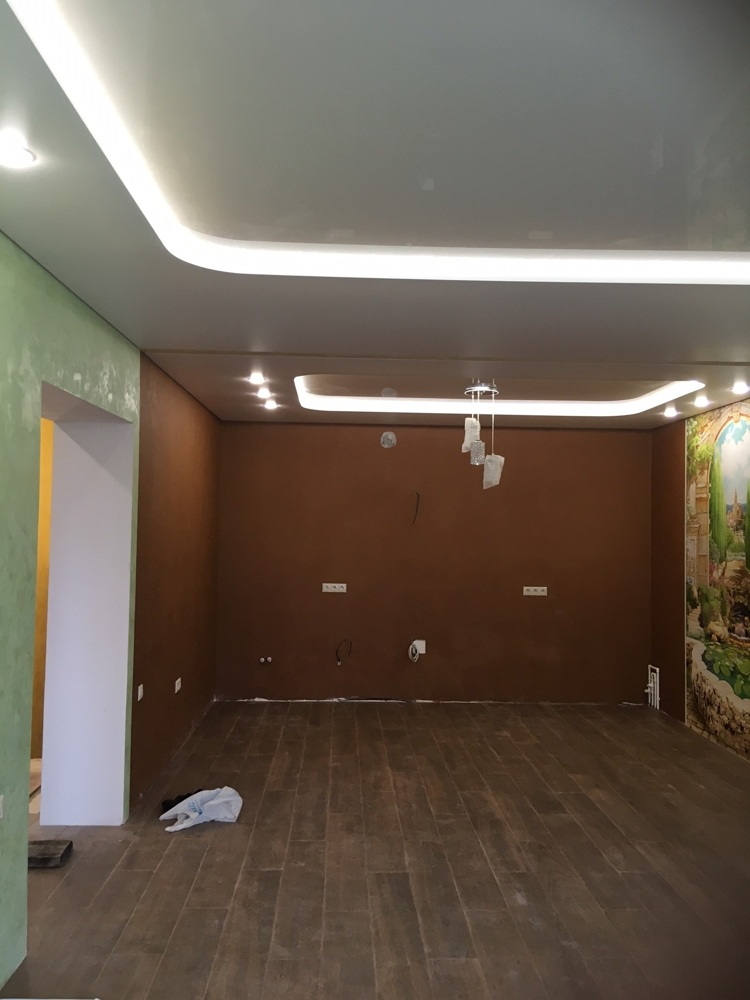
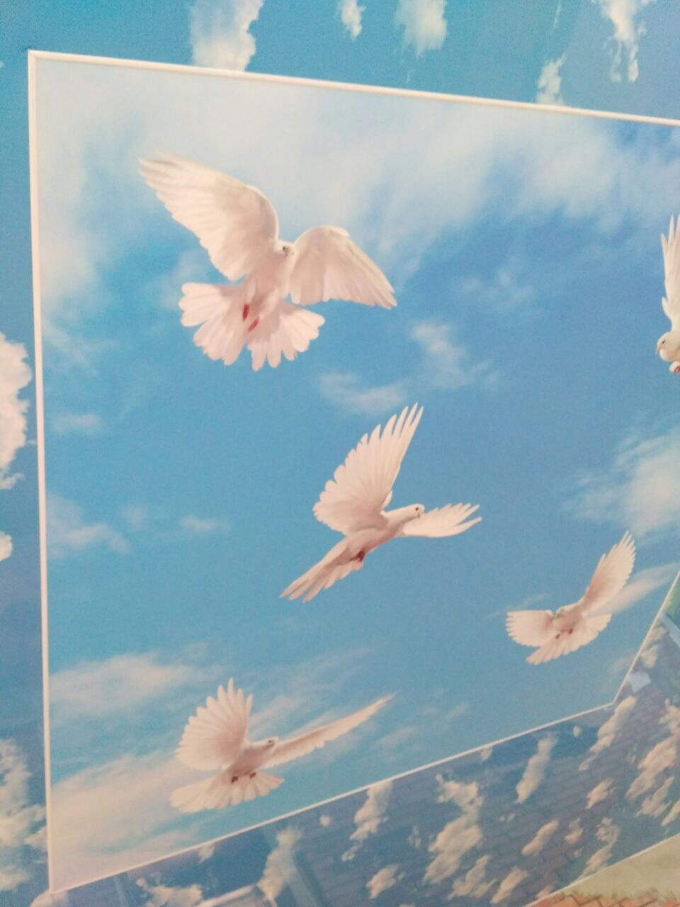
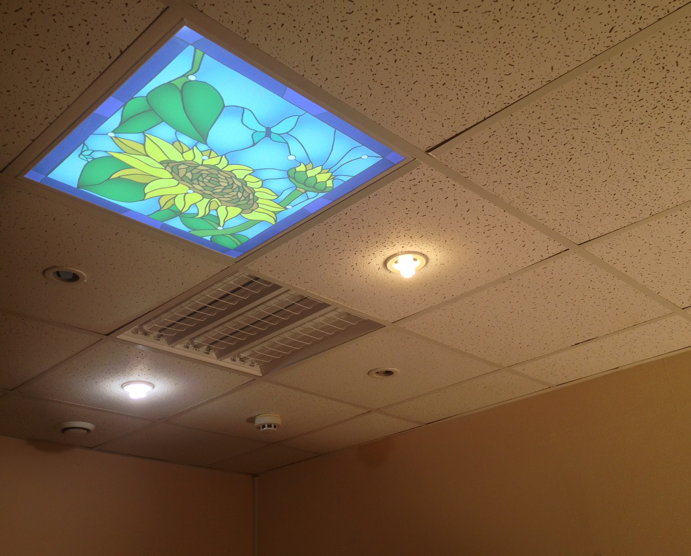

01 / НАТЯЖНЫЕ ПОТОЛКИ
Поверхность, которая собирает интерьер
Матовые, сатиновые и глянцевые поверхности. Спокойный фон для интерьера или его выразительный акцент.
- Матовые поверхности
- Сатиновые фактуры
- Глянцевые полотна
От спокойной матовой поверхности до светового потолка. Выберите направление, чтобы рассмотреть детали и примеры.
01 / НАТЯЖНЫЕ ПОТОЛКИ
Матовые, сатиновые и глянцевые поверхности. Спокойный фон для интерьера или его выразительный акцент.

02 / ПАРЯЩИЕ ПОТОЛКИ
Мягкий свет по периметру отделяет потолок от стен и подчёркивает геометрию комнаты.

03 / СВЕТОВЫЕ ПОТОЛКИ
Свет за полупрозрачным полотном создаёт светящуюся поверхность — целиком или в отдельной части потолка.

04 / СЛОЖНЫЕ ФОРМЫ
Несколько уровней, изгибы, арки и объёмные конструкции — когда потолок становится частью архитектуры.

05 / ФОТОПЕЧАТЬ И ДЕКОР
Изображения, цветовые сочетания и декоративные поверхности для индивидуального решения.

06 / МОДУЛЬНЫЕ ПОТОЛКИ
Съёмные кассеты с натяжной плёнкой для помещений, где нужен доступ к коммуникациям за потолком.
Расскажите, какой потолок вы представляете. Начнём с задачи, света и деталей интерьера.